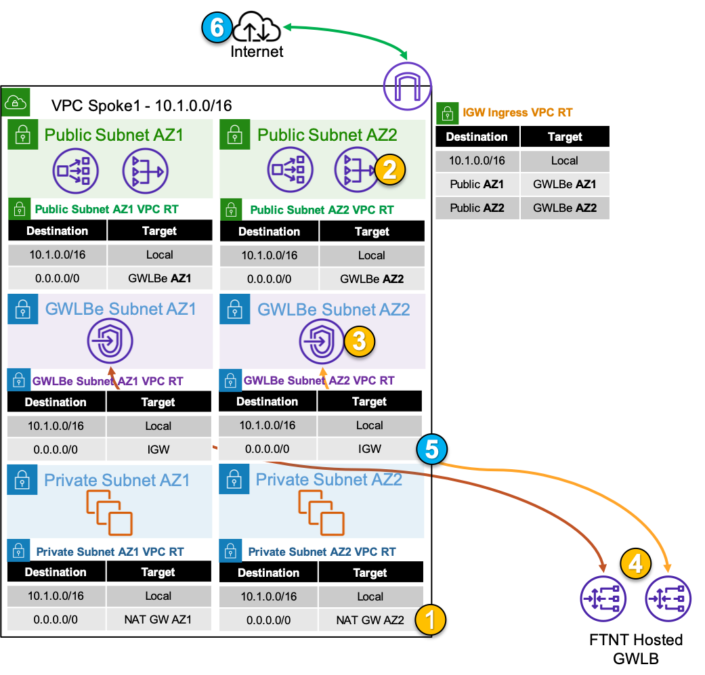
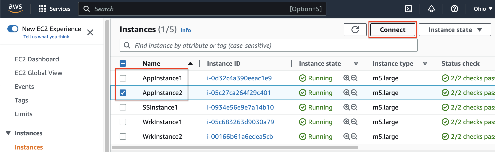
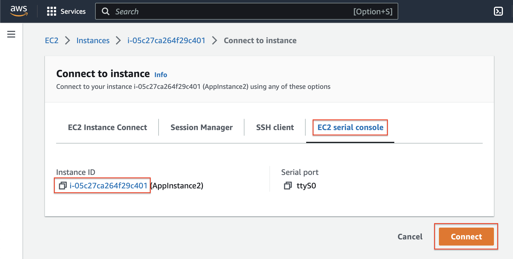

Distributed Egress
For this traffic flow we will focus on the Application VPC. Distributed egress is commonly used when there is a need to inspect traffic for a VPC that has an attached IGW and resources with a public Elastic IP (EIP) or that are behind a NAT GW. The benefit of this design is that traffic does not need to traverse additional AWS networking components for inspection so each VPC is isolated from others. The caveat to consider is that each VPC would need a directly attached IGW and resources such as NAT GWs that have additional cost.

Step 1: An outbound connection starts with a private EC2 instance initiating a connection to a public resource. The first packet (ie TCP SYN) will be routed to the intrinsic router which will route traffic to the NAT GW in the same AZ, as configured in the assigned VPC route table. The EC2 instance has a default route, received via DHCP, that points to the first host IP in the subnet which is the intrinsic router.
Step 2: The traffic is received at the NAT GW ENI which then routes the traffic to the associated GWLBe endpoint in the same AZ, as configured in the assigned VPC route table.
The NAT GW will source NAT the traffic to the private IP assigned to its ENI.
Step 3: The traffic is received at the GWLBe endpoint which then routes the traffic to the associated GWLB ENI in the same AZ in the managed Fortinet AWS account/VPC. This is done behind the scene using AWS Private Link.
Step 4: The traffic is received at the GWLB ENI and is then encapsulated in a GENEVE tunnel and routed to one of the instances in the FortiGate CNF auto scale group for traffic inspection. Post inspection, if the traffic is allowed, the instance will hairpin the traffic back to the same GWLB ENI over GENEVE. Then the GWLB ENI will hairpin the traffic back to the same GWLBe endpoint.
Step 5: The GWLBe endpoint will then route the inspected traffic to the intrinsic router. The intrinsic router will route traffic directly to the IGW as specified in the VPC route table assigned to the subnet.
The IGW will source NAT the traffic to the public EIP assigned to the NAT GW ENI.
Step 6: The destination will receive the traffic and respond. The return traffic will be intercepted at the IGW and routed to the GWLBe endpoint. Then the return traffic follow these steps in reverse.
- 1. To test out this flow navigate to the AWS EC2 console and go to Instances > Instances. Then select either AppInstance and click Connect > EC2 serial console. Copy the instance ID as this will be the username and click connect.


- 2. Login to the instance with the instance ID as the username and Fortinet123! as the password. Then run the commands below to test traffic:
ping 8.8.8.8
curl http://ipinfo.io
curl https://ipinfo.io
You are now only allowing HTTPS outbound to one FQDN and ICMP to any public IP within the United States!